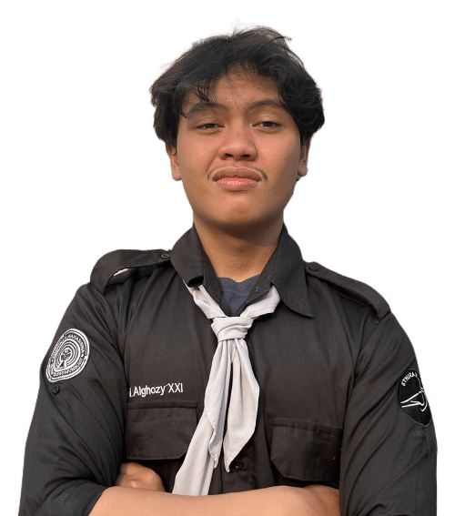

Dhaafin
Makhalingga
get to know me!
Building Intuitive
and Engaging
Digital Experiences
As a tenacious and quick-to-learn Telecommunications Systems freshgraduate, I bring a robust technical background and a keen interest in bridging the gap between intricate systems and seamless user interaction
scroll for more ↓